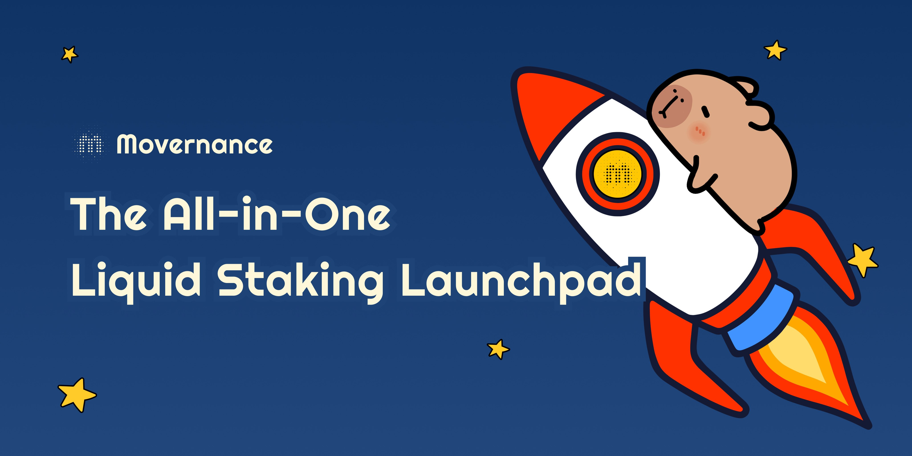
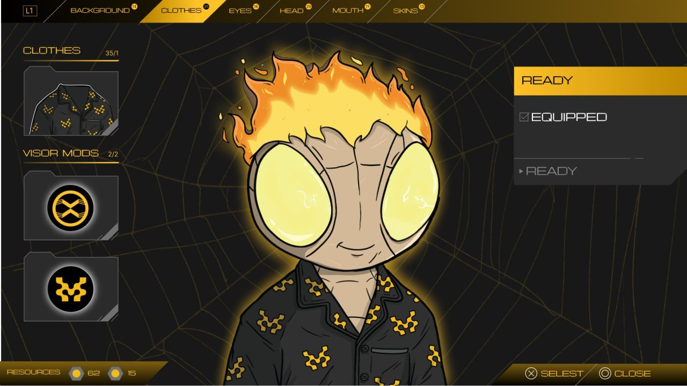
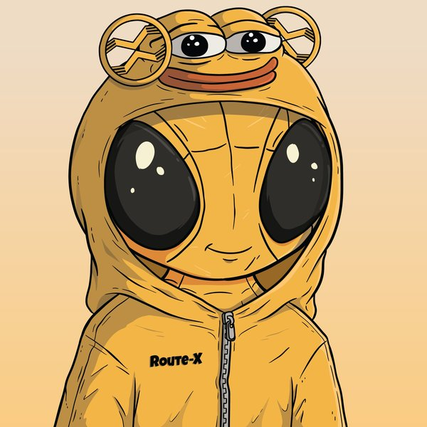

Official website
Website copy · AI-assisted development
Wrote the copy and built the official website with ChatGPT and Claude Code.
Visit website ↗Websites, videos, campaign visuals, and interface design.
Website copy · AI-assisted development
Wrote the copy and built the official website with ChatGPT and Claude Code.
Visit website ↗Video creation
A product demo video I created for DeepChatBI.

Partnership communications
36.5Kpost views
I shaped the collaboration strategy and community-facing launch messaging for the RouteX × OKX announcement, bringing the partnership to audiences across both ecosystems.

Community event
1,500 listeners
Movement × RouteX × Colony AMA. Event promotion and community coordination; 1,500 listeners reported in the recap.

Mascot concept · Community content · Sticker pack
I brought Movement’s yellow Pepe into RouteX’s visual identity and created a custom Telegram sticker pack for everyday community conversations. The community had an active creative culture, with members making their own memes and fan art. Groute gave that energy a shared character people could use and make their own.
View sticker launch ↗ Open sticker pack ↗
Campaign strategy & execution
$30K reward pool
For the April 10–May 10, 2025 campaign, I designed the leaderboard, weekly missions, and anti-wash-trading rules. The aim was to turn campaign attention into hands-on familiarity with RouteX: get people using the product, then give them a reason to return each week.
RouteX × Colony — community Seed round result and original animation.
View the announcement and animation on X ↗
Fundraising communications
I owned community communications after the raise was confirmed.
$200K+ USDC committed

Mascot concept · Brand direction
The idea came from a simple connection: Movernance is a staking launchpad, and capybaras love soaking in water. I proposed a relaxed, water-loving mascot as a playful way to make staking feel approachable. The team adopted the concept; this published banner shows it in use.
View published work ↗
UI design
I designed this NFT Launchpad interface, bringing trait selection, a character preview, and equipped status together in a black-and-gold layout.

3,846campaign participants · OKX
Launch messaging · Bilingual content · Creator coordination
I created the website copy, application messaging, and bilingual social content, and coordinated the OKX Marketplace collaboration and creator outreach. The campaign brought together wallet and social tasks as an entry point to the Rabble Revolution launch.
Collection artwork shown for context.View launch on OKX ↗
Launch storytelling
18.9Kpost views
I introduced RR to the Movement community with an invitation to help “rewrite the history,” followed by a simple question: “But what is RR?” The teaser used an open question to build curiosity before revealing the project.
A few shortcuts around my work.
I work across growth, community, and creative work in tech. I've built an X audience from zero to 150K, and I like helping early-stage teams find their starting point.